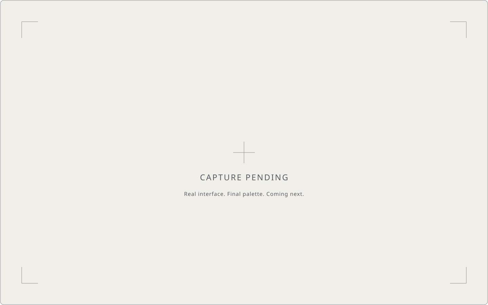

01 / Edit
Keep the words you want.
Select words in the transcript to cut the video. Remove filler words and tighten long pauses.
A native editor for talking-head video
Start with a recording. Keep the words that matter.
Make something worth sharing.

A recording, rethought
From the first word to the final clip.
{{SHOWREEL_NOTE}}
{{SHOWREEL_STATUS}}
Yours to make things with
{{FFMPEG_NOTICE}}
A quieter way to edit
01 / Edit
Select words in the transcript to cut the video. Remove filler words and tighten long pauses.
02 / Find
Find Clips turns a transcript into suggestions with the AI connector you choose. Review what to keep.
03 / Caption
Choose a caption style and burn readable captions into the video.
04 / Export
Make a portrait, square or landscape clip. Export the result as an MP4.
{{TUTORIAL_NOTE}}
Your work, your choices
Transcribe on your computer with a local model. Download the model first. Cloud transcription is an explicit choice and sends audio to the provider.
Choose your AI connector and bring your own API keys. The app stores keys in the macOS Keychain or encrypted for your Windows account. Find Clips sends transcript text to the connector you choose. AI tighten (coming) will do the same. Voice Lab (beta, coming) will send your voice recordings, the words to speak and a little surrounding transcript for context to ElevenLabs with your key, after consent; its Rewrite will send the selected passage to your AI connector, and lip sync the selected video and its audio to the provider you choose.
No analytics, crash reports or usage pings. Chosen providers, model downloads, update checks and publishing still use the network.
Open from the start
VoxClip is released under the MIT licence. Bundled fonts and libraries keep their own licences.
{{FFMPEG}}